conheça o universo de VALORANT
Valorant desenvolvido pela Riot Games, é um jogo de tiro tático em
primeira pessoa que combina habilidade, estratégia e trabalho em
equipe em partidas intensas e competitivas.
Em equipes de 5 jogadores, você assume o papel de um Agente com
habilidades únicas e participa de confrontos dinâmicos onde o objetivo
vai muito além de apenas eliminar o inimigo. Aqui, posicionamento,
comunicação e timing são essenciais para alcançar a vitória.
Cada mapa apresenta novos desafios e possibilidades, exigindo
adaptação constante e pensamento estratégico. Seja avançando para
plantar a Spike ou defendendo com precisão milimétrica, cada rodada é
uma oportunidade de mostrar sua habilidade.
Com um estilo visual moderno e cinematográfico, Valorant entrega uma
experiência imersiva que une ação rápida com profundidade tática,
conquistando jogadores ao redor do mundo e se consolidando como um dos
principais títulos do cenário competitivo.
Prepare-se, mire com precisão e domine o jogo.

Os Agentes são personagens únicos, cada um com habilidades especiais
que transformam completamente a forma de jogar.
Divididos em funções específicas, os agentes se complementam dentro
da equipe, tornando cada partida uma experiência dinâmica e
estratégica.
Cada um possui um conjunto único de habilidades que pode virar o
jogo em segundos, saber quando e como usar cada recurso é o que
separa jogadores comuns de verdadeiros estrategistas.
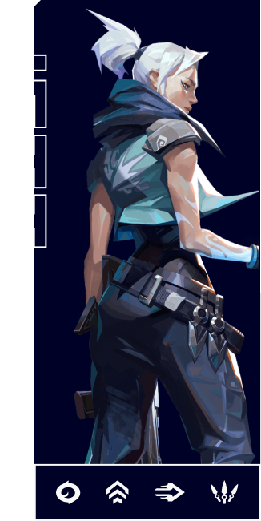
No Valorant, cada mapa é inspirado em diferentes regiões do mundo,
trazendo cenários únicos, cheios de personalidade e detalhes que
influenciam diretamente na jogabilidade.
Cada ambiente foi cuidadosamente desenvolvido para oferecer novas
possibilidades estratégicas, com rotas, posições e dinâmicas que
exigem adaptação constante dos jogadores.
Explore todos os mapas e descubra como cada um pode transformar
completamente a forma de joga
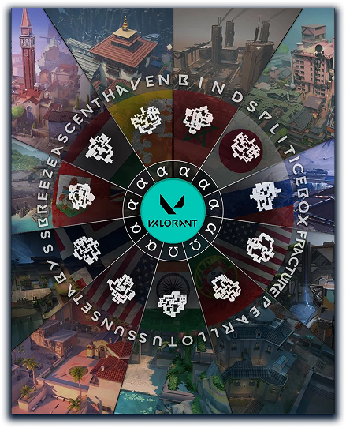
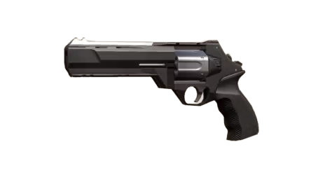

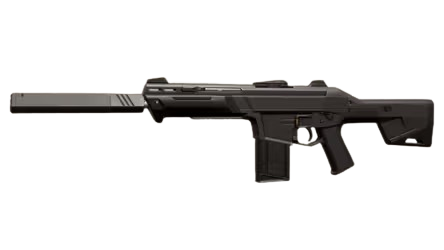
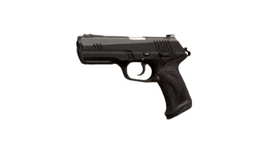
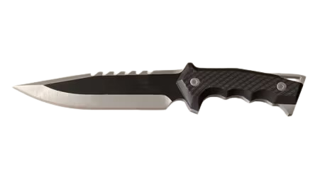
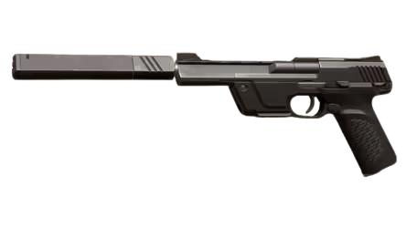
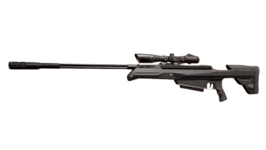
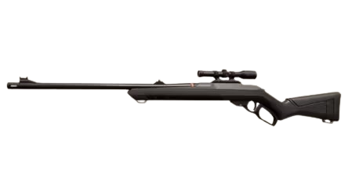
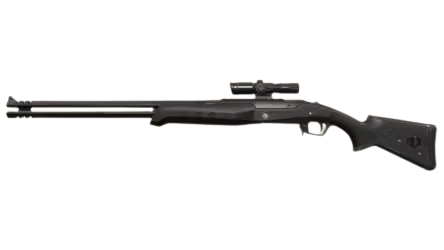
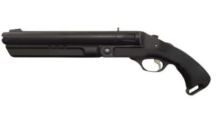
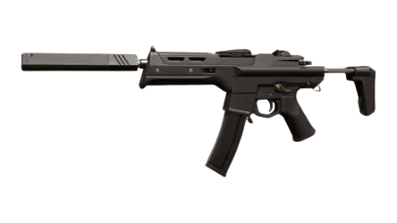
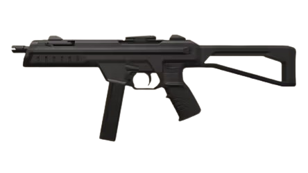
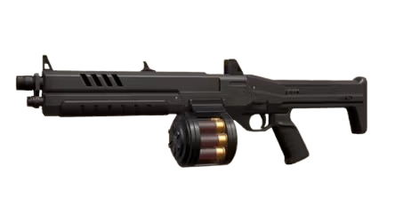
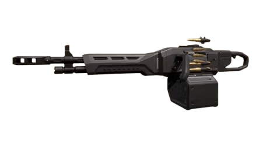
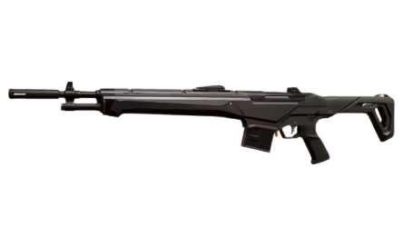
Arma leve
Sheriff é um revólver moderno feito para quem busca tiros certeiros na cabeça do inimigo.
Projeto com fins educacionais • © 2026 Gustavo Moraes